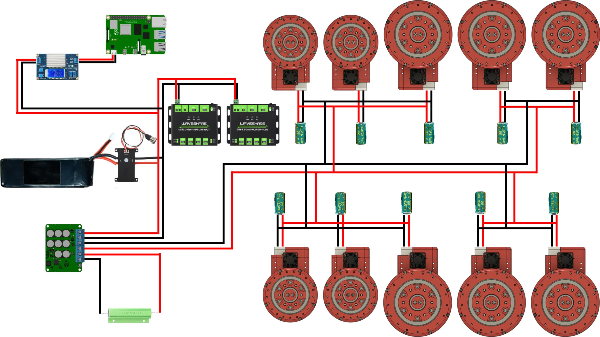

1. Power Delivery Architecture
Driving 10 independent high-torque brushless actuators creates immense power demands. The system regularly draws massive amperage spikes during simultaneous high-torque commands, followed immediately by severe voltage surges during dynamic fall recovery and regenerative braking. The power architecture is designed strictly around managing these extremes.
Core Power Train & Inrush Protection
- Main Battery: CNHL 6S LiPo 5000mAh 65C (22.2V Nominal / 25.2V Max). This high-discharge pack provides the necessary immediate current for rapid impedance commands.
- Anti-Spark Switch: Flipsky Smart Enhanced Version ESC Switch. Plugging a 6S battery directly into a highly capacitive system creates destructive arc flashes. This switch safely handles the inrush current and supports up to 120A of continuous draw, ensuring the main power lines are never the bottleneck.
- Firmware Current Limiting: To protect the hardware and motor windings during extended RL testing, strict phase current limits are enforced directly within the STM32 SimpleFOC firmware. The large G80 actuators (Hip Pitch, Knee, Ankle Pitch) are hard-capped at 12.2 Amps, while the smaller G60 actuators (Hip Yaw, Hip Roll) are restricted to 6.7 Amps.
Regenerative Braking & Local Filtering
- Dump Load (Regen Clamp): When a 25kg robot yields to gravity, back-driving the 10 actuators turns them into generators. An ODrive Regen Clamp is installed in parallel with the battery, equipped with a 0.5-Ohm 200W chassis-mounted aluminum wirewound resistor to safely dissipate extreme back-EMF as heat.
- Actuator Capacitance: To suppress high-frequency electrical noise and handle localized voltage ripple directly at the motor drivers, external 50V 470uF High-Frequency Low-ESR Aluminum Electrolytic Capacitors are clipped to the outside of every single actuator.
Logic Power
- Step-Down Converter: A DROK 12A Adjustable DC Buck Converter splits off the main power line before the regen clamp, ensuring the 5V logic branch is never starved during a massive braking voltage dump.

2. Communication & Control Topology
Because the low-level impedance calculations are natively handled by the STM32 microcontrollers on each joint, the master control PC is strictly responsible for high-level neural network inference and state estimation over a distributed USB network.
Master Control & USB Routing
- Single Board Computer (SBC): Raspberry Pi 4. Serves as the central brain, executing the ONNX neural network policy and orchestrating the asynchronous serial communication loop.
- Industrial USB Distribution: To communicate with 10 independent nodes without overwhelming a single bus controller, the USB topology is split. Two Waveshare Industrial Grade Powered USB 3.2 Hubs handle the bulk of the routing, with 4 actuators connected to each hub. The remaining 2 actuators are routed directly into the Raspberry Pi's native USB ports, maximizing data throughput and maintaining the strict 50Hz control frequency.
State Estimation
- Inertial Measurement Unit (IMU): BNO085. Provides high-fidelity game rotation
vectors and gyroscope data. It communicates with the Pi over I2C at 50kHz using the
adafruit_bitbangiolibrary, a specific software configuration required to bypass standard Raspberry Pi hardware clock-stretching bugs.